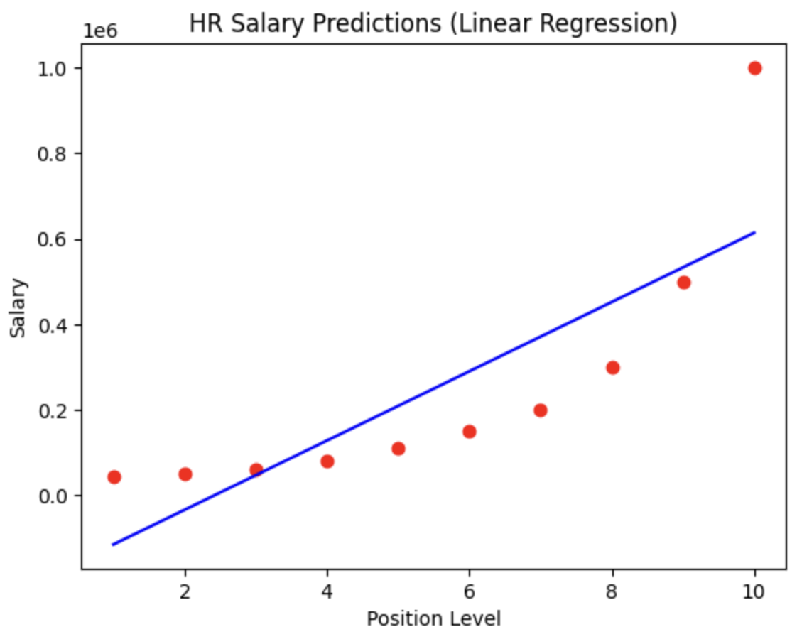

Making sense of complexity through data. Leveraging AI to empower people and decisions.
Intro
This portfolio captures my journey from data analytics to machine learning. I began with projects in R and soon transitioned to Python, where I discovered the world of AI. Along the way, I’ve learned to build models catering to supervised and unsupervised learning. I’m currently getting more familiar with deep learning—specifically computer vision and retrieval-augmented generation. Check out some of my work here.
Projects
This section showcases hands-on projects where I apply Python and R to solve real-world problems. From data cleaning to model evaluation, each project includes a clear data pipeline, code snippets, and key takeaways. You’ll also find notes on the challenges I faced and how I overcame them, offering insight into my problem-solving approach.
Project Types
üìΩÔ∏è Box Office Data Analysis
This project explored publicly available data on top-grossing US films to identify patterns across genres, studios, and release schedules. I used R and ggplot2 for data exploration and visualisation.
üíª Tech Stack:
R for data manipulation and visualisation
ggplot2 for creating custom, layered visual insights
üß™ Data Pipeline:
Import & inspect data: Used read.csv(), summary(), and str()
Initial exploration: Identified no Monday releases using a bar plot of Day.of.Week
Filtering for significance: Narrowed to key genres and major studios
Visualisation: Created jitter + box plots comparing domestic gross
Aesthetics: Tuned themes for clarity and presentation
üìä Code Snippets & Visualisations:
# No movies are ever released on a Monday. (Figure 1)
ggplot(data=mov, aes(x=Day.of.Week)) + geom_bar()
# Filter dataset for desired genres:
filt <- (mov$Genre == "action") | (mov$Genre == "adventure") |
(mov$Genre == "animation") | (mov$Genre == "comedy") | (mov$Genre == "drama")
# Filter dataset for desired studios:
filt2 <- (mov$Studio == "Buena Vista Studios") | (mov$Studio == "WB") |
(mov$Studio == "Fox") | (mov$Studio == "Universal") |
(mov$Studio == "Sony") | (mov$Studio == "Paramount Pictures")
# Apply filters
mov2 <- mov[filt & filt2,]
# Prepare the plot's data and aes layers (Figure 2)
p <- ggplot(data=mov2, aes(x=Genre, y=Gross...US))
q <- p +
geom_jitter(aes(size=Budget...mill., colour=Studio)) +
geom_boxplot(alpha = 0.7, outlier.colour = NA)
# Non-data info
q +
xlab("Genre") +
ylab("Gross % US") +
ggtitle("Domestic Gross % by Genre")
# Theme
q <- q +
theme(
text = element_text(family="Times New Roman"),
axis.title.x = element_text(colour="Blue", size=30),
axis.title.y = element_text(colour="Blue", size=30),
axis.text.x = element_text(size=20),
axis.text.y = element_text(size=20),
plot.title = element_text(colour="Black", size=40),
legend.title = element_text(size=20),
legend.text = element_text(size=12)
)
Figure 1 No releases on MondaysFigure 2 Domestic gross by genre
üåü Key Insights:
Profitable genres are concentrated among a few studios. Monday releases are avoided — possibly a scheduling strategy.
üßóüèæ Challenge Faced:
Overlapping outliers and jitter points in ggplot2 caused clutter. I resolved this with outlier.colour = NA and alpha blending.
This project analysed five years of company financial data (2018–2022), including Balance Sheet, Income Statement, and Cash Flow Statement. I used Python and pandas to calculate key financial ratios, identify operational trends, and visualise multi-year performance.
üíª Tech Stack:
R for data manipulation and analysis
Pandas for computations
Matplotlib for plotting financial visualisations
üß™ Data Pipeline:
Load & inspect data: Imported multi-statement CSV into pandas. Extracted relevant sections for Balance Sheet, Income Statement, and Cash Flow Statement using loc[].
Trend Analysis: Plotted major components (e.g. assets, equity) using .plot() to visualise financial stability over time.
Ratio Calculations: Computed solvency and profitability ratios: Return on Equity (ROE), Return on Assets (ROA), Debt-to-Equity. Built DataFrame to summarise and visualise using grouped bar plots.
Custom Metrics: Created Operating Cash Flow to Total Debt ratio from cash flow and balance sheet sections to assess short-term liquidity strength.
üìä Code Snippets & Visualisations:
# Load required library for visualizations
library(ggplot2)
library(tidyverse)
# Data
revenue <- c(14574.49, 7606.46, 8611.41, 9175.41, 8058.65, 8105.44, 11496.28, 9766.09, 10305.32, 14379.96, 10713.97, 15433.50)
expenses <- c(12051.82, 5695.07, 12319.20, 12089.72, 8658.57, 840.20, 3285.73, 5821.12, 6976.93, 16618.61, 10054.37, 3803.96)
# Calculate Profit As The Differences Between Revenue And Expenses
profit <- revenue - expenses
profit
# Calculate Tax As 30% Of Profit And Round To 2 Decimal Points
tax <- round(0.30 * profit, 2)
tax
# Calculate Profit Remaining After Tax Is Deducted
profit.after.tax <- profit - tax
profit.after.tax
#Visualize Profit after tax
# Create a data frame for visualization
data <- data.frame(
Month = 1:12,
Profit_After_Tax = profit.after.tax)
# Create the bar chart using ggplot2 (Figure 1)
ggplot(data, aes(x = factor(Month), y = Profit_After_Tax)) +
geom_bar(stat = "identity", fill = "steelblue") +
labs(title = "Monthly Profit After Tax", x = "Month", y = "Profit After Tax") +
theme_minimal()
# Calculate The Profit Margin As Profit After Tax Over Revenue
profit.margin <- round(profit.after.tax / revenue, 2) * 100
profit.margin
# Visualize Profit Margin
# Create a data frame for visualization
data <- data.frame(
Month = 1:12,
Profit_margin = profit.margin)
# Create the bar chart using ggplot2 (Figure 2)
ggplot(data, aes(x = factor(Month), y = profit.margin)) +
geom_bar(stat = "identity", fill = "orange") +
labs(title = "Monthly Profit Margin (%)", x = "Month", y = "Profit Margin (%)") +
theme_minimal()
# Calculate The Mean Profit After Tax For The 12 Months
mean_pat <- mean(profit.after.tax)
mean_pat
# Find The Months With Above-Mean Profit After Tax
good.months <- profit.after.tax > mean_pat
good.months
# Bad Months Are The Opposite Of Good Months
bad.months <- !good.months
bad.months
# The Best Month Is The Month With The Highest Profit After Tax
best.month <- profit.after.tax == max(profit.after.tax)
best.month
# The Worst Month Is The Month With The Lowest Profit After Tax
worst.month <- profit.after.tax == min(profit.after.tax)
worst.month
Figure 1 Profit After TaxFigure 2 Profit Margin
üåü Key Insights:
The company showed stable asset growth and rising equity, but the Debt-to-Equity ratio increased post-2020, signalling higher leverage risk.
Operating cash flow was consistently positive, suggesting sufficient liquidity to meet short-term obligations — a green flag for operational health.
üßóüèæ Challenge Faced:
Initially, aligning the financial statements by year was inconsistent due to mixed string/index formats across categories. I overcame this by explicitly extracting year-based columns and standardising label references. This made ratio computations and cross-statement comparisons reliable and reproducible.
This project used World Bank development indicators to explore trends in population growth, urbanisation, and fertility rates across continents and income groups. The objective was to uncover insights about global development patterns over time using Python.
üíª Tech Stack:
Python for data handling and exploration
Pandas for data manipulation
Matplotlib for visualisations
üß™ Data Pipeline:
Load & inspect data: Loaded the dataset using pd.read_csv() and inspected structure with .info() and .head() to understand column types and missing data.
Cleaning: Renamed columns, removed irrelevant rows, and addressed missing values for smoother analysis.
Initial Exploaration: Examined fertility rates, population growth, and urban population across income levels and continents.
Grouping & Summarisation: Used groupby() and mean() to aggregate indicators by continent and income level.
Visualisation: Created scatter plots, line plots, and box plots to reveal relationships between population metrics and economic status.
üìä Code Snippets & Visualisations:
# Plot the BirthRate versus Internet Users categorised by Income Group (Figure 1)
vis1 = sns.lmplot( data = data, x = 'BirthRate', y = 'InternetUsers', fit_reg = False, hue = 'IncomeGroup', height = 10 )
# Create the dataframe
country_data = pd.DataFrame({'CountryName': np.array(Countries_2012_Dataset),
'CountryCode': np.array(Codes_2012_Dataset),
'CountryRegion': np.array(Regions_2012_Dataset)})
# Merge country data to the original dataframe (Table 1)
merged_data = pd.merge(left=data, right=country_data, how='inner', on="CountryCode")
merged_data.head()
# Create a data frame with the life expectancy
life_exp_data = pd.DataFrame({'CountryCode': np.array(Country_Code),
'LifeExp1960': np.array(Life_Expectancy_At_Birth_1960),
'LifeExp2013': np.array(Life_Expectancy_At_Birth_2013)})
# Merge the data frame with the life expectancy
merged_data1 = pd.merge(left=merged_data, right=life_exp_data, how='inner', on='CountryCode')
# Explore the dataset (Table 2)
merged_data1.head()
# Plot the BirthRate versus LifeExpectancy cathegorised by Country Region in 1960 (Figure 3)
vis3 = sns.lmplot( data = merged_data1, x = 'BirthRate', y = 'LifeExp1960', fit_reg = False, hue = 'CountryRegion', height = 10 )
Plot
# Plot the BirthRate versus LifeExpectancy cathegorised by Country Region in 2013 (Figure 4)
vis4 = sns.lmplot( data = merged_data1, x = 'BirthRate', y = 'LifeExp2013', fit_reg = False, hue = 'CountryRegion', height = 10 )
Table 1 Merged DFTable 2 Merged DF 2Figure 1 BirthRate versus Internet Users categorised by Income GroupFigure 2 BirthRate versus Internet Users categorised by Country RegionFigure 3 BirthRate versus LifeExpectancy in 1960Figure 4 BirthRate versus LifeExpectancy in 2013
üåü Key Insights:
Countries with lower income levels showed higher fertility rates and population growth.
Urban population tends to correlate with income level, especially in developed regions.
Africa stands out with higher fertility rates and population growth compared to other continents.
üßóüèæ Challenge Faced:
Filtering and reshaping the dataset for multi-variable analysis was complex due to inconsistent column names and missing data. I solved this by methodically renaming columns and using .dropna() to exclude incomplete records while maintaining dataset integrity.
This project analyzed historical stock price data for major companies and the S&P 500 index to understand price movements, correlations, and daily return patterns. I built an interactive dashboard using Python's data science stack to visualize both raw and normalized stock performance alongside risk metrics.
üíª Tech Stack:
Python for data manipulation and analysis
Pandas for computations
Matplotlib & Seaborn for static visualisations
Plotly for interactive charts and dashboards
NumPy & SciPy for statistical computations
üß™ Data Pipeline:
Explore data: Loaded stock price data using pd.read_csv() and explored the dataset structure with .info(), .describe(), and .head() to understand the time series format and identify key stocks. Checked for missing values using .isnull().sum() and calculated basic statistics like mean returns and standard deviation to assess data completeness and variability.
Price Normalisation: Created a custom normalize() function to standardize all stock prices to their starting values, enabling fair comparison of relative performance across different price ranges.
Daily Returns Calculations: Built a daily_return() function using nested loops to compute percentage daily returns: ((current_price - previous_price) / previous_price) * 100 for each stock.
Visualisation: Developed reusable plotting functions show_plot() and interactive_plot() to create both static matplotlib charts and interactive Plotly visualizations for raw prices, normalized prices, and daily returns.
Correlation Analysis: Generated a correlation matrix using .corr() and visualized it with a Seaborn heatmap to identify relationships between stock movements.
Distribution Analysis: Created histograms and compiled distribution plots using Plotly's create_distplot() to analyze the statistical properties of daily returns.
üìä Code Snippets & Visualisations:
# Visualize Stocks data
def show_plot(df, title):
df.plot(x = 'Date', figsize=(12, 8), linewidth = 3, title=title)
plt.xlabel('Date')
plt.ylabel('Price')
plt.grid()
plt.show()
# Plot the data (Figure 1)
show_plot(stocks_df, 'STOCKS DATA')
# Normalized Stock Data (Figure 2)
def normalize(df):
x = df.copy()
for i in x.columns[1:]:
x[i] = x[i]/x[i][0]
return x
normalize(stocks_df)
# Create Interactive chart of Stock Data (Figure 3)
def interactive_plot(df, title):
fig = px.line(title=title)
for i in df.columns[1:]:
fig.add_scatter(x=df['Date'], y=df[i], name=i)
fig.update_layout(
xaxis_title = "Date",
yaxis_title = "Price"
)
fig.show()
interactive_plot(stocks_df, 'STOCKS DATA')
# Create Interactive chart of Normalized Stock Data (Figure 4)
interactive_plot(normalize(stocks_df), 'STOCKS DATA')
#Calculate stocks daily returns
def daily_return(df):
df_daily_return = df.copy()
#loop for columns
for i in df.columns[1:]:
#loop for rows
for j in range(1, len(df)):
df_daily_return[i][j] = ((df[i][j] - df[i][j-1]) / (df[i][j-1]))*100
df_daily_return[i][0] = 0
return df_daily_return
# Get the daily returns (Figure 5)
stocks_daily_return = daily_return(stocks_df)
stocks_daily_return
interactive_plot(stocks_daily_return, 'Stocks Daily returns')
# Daily Return Correlation
cm = stocks_daily_return.drop(columns = ['Date']).corr()
cm
# heatmap showing correlations (Figure 6)
plt.figure(figsize=(10, 8))
sns.heatmap(cm, annot=True, cmap='RdYlGn') #true give you the values on the heatmap
plt.show()
# Histogram of daily returns (Figure 7)
stocks_daily_return.hist(bins=50, figsize=(20, 10))
plt.show();
The daily returns calculation initially produced incorrect values for the first row of each stock. After debugging, the issue was that there's no previous day to calculate a return from for the first entry. This was solved by explicitly setting the first day's return to 0 using df_daily_return[i][0] = 0 after the loop calculation, ensuring accurate percentage calculations for all subsequent days.
This project built a comprehensive portfolio management system that simulates random asset allocation across major stocks and calculates key financial metrics including returns, volatility, and risk-adjusted performance. I developed a complete portfolio analytics framework using Python to evaluate investment strategies and portfolio performance over time.
üíª Tech Stack:
Python for financial calculations and portfolio modeling
Pandas for time series data manipulation and financial computations
NumPy for random weight generation and mathematical operations
Plotly & SciPy for interactive portfolio performance visualisation, statistical analysis and risk metrics
üß™ Data Pipeline:
Data Preparation: Loaded and sorted stock data chronologically using sort_values() by Date to ensure proper time series analysis for portfolio calculations.
Random Portfolio Generation: Used np.random.seed() and np.random.seed(9) to create randomized asset allocation weights, then normalized them using weights / np.sum(weights) to ensure they sum to 100%.
Portfolio Normalisation: Applied a custom normalize() function to standardize all stock prices to their initial values, creating a baseline for relative performance comparison across different price ranges.
Portfolio function development: Built a reusable portfolio_allocation() function that encapsulates the entire workflow for testing different weight combinations and portfolio strategies.
Risk metrics calculation: Computed cumulative return, standard deviation (volatility), average daily return, and Sharpe ratio (assessesment of the risk-adjusted returns of an investment) using np.sqrt(252) for annualization.
üìä Code Snippets & Visualisations:
#Create random portfolio weights
np.random.seed()
# Create random weights for the stocks
weights = np.array(np.random.random(9))
# Random Asset Allocation & Calculate Portfolio Daily Return
weights = weights / np.sum(weights)
print(weights)
# Define Normalization function
def normalize(df):
x = df.copy()
for i in x.columns[1:]:
x[i] = x[i]/x[i][0]
return x
# Enumerate returns the value and a counter as well
for counter, stock in enumerate(df_portfolio.columns[1:]):
df_portfolio[stock] = df_portfolio[stock] * weights[counter]
df_portfolio[stock] = df_portfolio[stock] * 1000000
df_portfolio
# Calculate the portfolio daily return
df_portfolio['portfolio daily % return'] = 0.0000
for i in range(1, len(stocks_df)):
# Calculate the percentage of change from the previous day
df_portfolio['portfolio daily % return'][i] = ( (df_portfolio['portfolio daily worth/$'][i] - df_portfolio['portfolio daily worth/$'][i-1]) / df_portfolio['portfolio daily worth/$'][i-1]) * 100
df_portfolio
# Create a function for stock portfolio allocation
# Assume $1000000 is total amount for portfolio
def portfolio_allocation(df, weights):
df_portfolio = df.copy()
# Normalize the stock avalues
df_portfolio = normalize(df_portfolio)
for counter, stock in enumerate(df_portfolio.columns[1:]):
df_portfolio[stock] = df_portfolio[stock] * weights[counter]
df_portfolio[stock] = df_portfolio[stock] * 1000000
df_portfolio['portfolio daily worth in $'] = df_portfolio[df_portfolio != 'Date'].sum(axis = 1)
df_portfolio['portfolio daily % return'] = 0.0000
for i in range(1, len(stocks_df)):
# Calculate the percentage of change from the previous day
df_portfolio['portfolio daily % return'][i] = ( (df_portfolio['portfolio daily worth in $'][i] - df_portfolio['portfolio daily worth in $'][i-1]) / df_portfolio['portfolio daily worth in $'][i-1]) * 100
# Set the value of first row to zero, as previous value is not available
df_portfolio['portfolio daily % return'][0] = 0
return df_portfolio
# Plot the portfolio daily return (Figure 1)
fig = px.line(x = df_portfolio.Date, y = df_portfolio['portfolio daily % return'], title = 'Portfolio Daily % Return',
labels = {
"x": "Date",
"y": "Daily Percentage Return"
})
fig.show()
# Cummulative return of the portfolio
cummulative_return = ((df_portfolio['portfolio daily worth/$'][-1:] - df_portfolio['portfolio daily worth/$'][0])/ df_portfolio['portfolio daily worth/$'][0]) * 100
print('Cummulative return of the portfolio is {} %'.format(cummulative_return.values[0]))
# Calculate the average daily return
print('Average daily return of the portfolio is {} %'.format(df_portfolio['portfolio daily % return'].mean() ))
# Portfolio sharpe ratio
sharpe_ratio = df_portfolio['portfolio daily % return'].mean() / df_portfolio['portfolio daily % return'].std() * np.sqrt(252)
print('Sharpe ratio of the portfolio is {}'.format(sharpe_ratio))
Figure 1 Portfolio Daily Returns (%)
üåü Key Insights:
Random portfolio allocation provides baseline performance benchmarks for comparing against optimized strategies, revealing how diversification across 9 stocks performs under equal-weight and random-weight scenarioss
Daily return volatility patterns indicate portfolio risk characteristics with higher volatility periods corresponding to market stress, while Sharpe ratio quantifies whether returns adequately compensate for risk takeno
Normalization to Day 1 baseline enables fair comparison across stocks with different price levels, allowing proper weight allocation based on percentage changes rather than absolute dollar amounts
Cumulative returns demonstrated the compound effect of daily performance over the investment period
üßóüèæ Challenge Faced:
I initially encountered an indexing error when calculating portfolio daily returns because I was trying to access the previous day's value for the first row, which doesn't exist. The calculation df_portfolio['portfolio daily % return'][i-1] failed on the first iteration. I solved this by explicitly setting the first day's return to 0 using df_portfolio['portfolio daily % return'][0] = 0 after the loop, and ensuring the loop started from index 1 rather than 0. This approach properly handled the edge case while maintaining accurate percentage calculations for all subsequent trading days.
üìΩÔ∏è Understanding Market Exposure: A CAPM-Based Stock Evaluation
This project emerged from a natural curiosity sparked during my earlier stock market analysis, where I explored daily return patterns and volatility trends. That initial exploration raised deeper questions: How do individual stocks behave in relation to market-wide movements?Can risk be quantified and priced? These questions led me to explore Beta (market sensitivity), Alpha (excess returns), and the Capital Asset Pricing Model (CAPM)—a foundational framework in modern finance.
üíª Tech Stack:
Python for financial calculations and statistical analysis
Pandas for time series data manipulation and daily returns calculations
NumPy for linear regression and polynomial fitting
Seaborn for enhanced statistical plotting capabilities
Plotly Express for interactive CAPM analysis charts
Matplotlib for static scatter plots and regression line visualisation
üß™ Data Pipeline:
Market benchmark analysis: Used S&P 500 as the market proxy and calculated average daily returns using .drop('Date', axis=1).mean() to establish baseline market performance.
Beta & Alpha computation: Applied np.polyfit() with order=1 to perform linear regression between individual stock returns and S&P 500 returns, extracting beta (slope) and alpha (intercept) coefficients.
Batch analysis automation: Developed loops to iterate through all stocks (excluding S&P 500 and Date columns) using conditional statements if i != 'sp500' and i != 'Date' to calculate beta and alpha for each stock systematically.
Interactive dashboard creation: Built Plotly Express scatter plots with px.scatter() and added regression lines using fig.add_scatter() to create interactive CAPM analysis charts for each stock.
Risk metrics storage: Used Python dictionaries beta = {} and alpha = {} to store calculated coefficients for each stock, enabling easy comparison and further analysis.
üìä Code Snippets & Visualisations:
# Function to calculate the daily returns
def daily_returns(df):
df_daily_return = df.copy()
for i in df.columns[1:]:
for j in range(1, len(df)):
df_daily_return[i][j] = ((df[i][j] - df[i][j-1])/df[i][j-1])*100
df_daily_return[i][0] = 0
return df_daily_return
# Plot a scatter plot between the selected stock and the S&P500 (Market) (Figure 1)
plt.scatter(stocks_daily_return['sp500'], stocks_daily_return['AAPL'])
plt.xlabel('sp500')
plt.ylabel('AAPL')
plt.grid()
# Add beta & alpha to plot
beta, alpha = np.polyfit(stocks_daily_return['sp500'], stocks_daily_return['AAPL'], 1)
# Add regression line (beta) - y = beta [stockvsmkt- stock volatility] * rm [stock daily return] + alpha [excess return on top of mkt return]
plt.plot(stocks_daily_return['sp500'], beta * stocks_daily_return['sp500'] + alpha, '-', color = 'r')
plt.show()
# Let's calculate the annualized rate of return for S&P500 (Assume 252 working days per year)
rm = stocks_daily_return['sp500'].mean() * 252
rm
# Assume risk free rate is zero (Used the yield of a 10-years U.S. Government bond as a risk free rate)
rf = 0
# Calculate return for any security (APPL) using CAPM
Exp_return_AAPL = rf + (beta * (rm - rf))
Exp_return_AAPL
# Create a placeholder for all betas and alphas
beta = {}
alpha = {}
for i in stocks_daily_return.columns[1:]:
if i != 'sp500'and i != 'Date':
stocks_daily_return.plot(kind = 'scatter', x = 'sp500', y = i, title = i)
plt.scatter(stocks_daily_return['sp500'], stocks_daily_return[i])
plt.xlabel('sp500')
plt.ylabel(i)
beta[i], alpha[i] = np.polyfit(stocks_daily_return['sp500'], stocks_daily_return[i], 1)
plt.plot(stocks_daily_return['sp500'], beta[i] * stocks_daily_return['sp500'] + alpha[i], '-', color = 'r')
plt.grid()
plt.show()
print('Beta for {} stock is {} & alpha is = {}'.format('AAPL', beta, alpha))
# Apply CAPM formula to calculate the return for the Portfolio
# Obtain a list of all stock names
stock_names = list(beta.keys())
stock_names
# Define the expected return dictionary
ER = {}
rf = 0
rm = stocks_daily_return['sp500'].mean() * 252
for i in stock_names:
ER[i] = rf + (beta[i] * (rm - rf))
ER
for i in stock_names:
print('Expected return for {} is {}%'.format(i, ER[i]))
Portfolio_weights = 1/8 * np.ones(8)
# Assume equal weights in the portfolio, calculate returns
ER_portfolio = sum(list(ER.values()) * Portfolio_weights)
ER_portfolio
Figure 1
üåü Key Insights:
Beta values revealed which stocks were more volatile than the market (beta > 1) versus defensive stocks (beta < 1)
The regression analysis showed how closely each stock's movements correlated with overall market trends
Visual scatter plots revealed the strength of linear relationships between individual stocks and market performance
üßóüèæ Challenge Faced:
I initially struggled with the loop logic for batch processing all stocks because I was accidentally including the S&P 500 index in the analysis against itself, which created perfect correlation (beta = 1, alpha = 0) and distorted my results. After debugging, I realized I needed to exclude both 'sp500' and 'Date' columns using compound conditional statements if i != 'sp500' and i != 'Date'. This solution ensured I only analyzed actual stocks against the market benchmark, providing meaningful beta and alpha calculations for investment decision-making.
This project built a multiple linear regression model to predict startup profitability based on their R&D spending, administration costs, marketing expenditure, and location. I implemented a complete machine learning pipeline using scikit-learn to analyze which factors most strongly influence startup success and revenue generation.
üíª Tech Stack:
Python for machine learning model development
Scikit-learn for preprocessing, model training, and evaluation
Pandas for dataset loading and initial data exploration
Matplotlib for data visualisations
NumPy for numerical array operations and precision control
üß™ Data Pipeline:
Data import & separation: Loaded the 50 Startups dataset using pd.read_csv() and strategically separated features (X) from the target variable (y) using .iloc[:, -1] for all columns except the last, and .iloc[:, -1] for the dependent variable (profit).
Categorical Encoding: Applied One-Hot Encoding using ColumnTransformer and OneHotEncoder() to convert the categorical 'State' variable (column index [3]) into numerical dummy variables, while keeping other numerical features intact using remainder='passthrough'.
Data transformation, model training & prediction: Used np.array(ct.fit_transform(X)) to convert the transformed data back into a NumPy array format suitable for machine learning algorithms. Implemented train_test_split() with an 80-20 split (test_size=0.2) and fixed random state (random_state=0) to ensure reproducible results and proper model validation. Instantiated and trained a LinearRegression() model using .fit(X_train, y_train) to learn the relationships between startup characteristics and profitability. Generated predictions on the test set using regressor.predict(X_test) to evaluate model performance on unseen data.
Results Visualisation: Used np.set_printoptions(precision=2) for clean output formatting and np.concatenate() with reshape() to create side-by-side comparison of predicted vs. actual values for easy performance assessment.
üìä Code Snippets & Visualisations:
# Encoding categorical data
from sklearn.compose import ColumnTransformer
from sklearn.preprocessing import OneHotEncoder
# OneHotEncoder(), [3] - the 3 is the column you want to encode
ct = ColumnTransformer(transformers=[('encoder', OneHotEncoder(), [3])], remainder='passthrough')
X = np.array(ct.fit_transform(X))
# Splitting Train ad Test set
from sklearn.model_selection import train_test_split
X_train, X_test, y_train, y_test = train_test_split(X, y, test_sise = 0.2, random_state = 0)
from sklearn.linear_model import LinearRegression
regressor = LinearRegression()
regressor.fit(X_train, y_train)
# Predicting Results
y_pred = regressor.predict(X_test)
np.set_printoptions(precision=2)
print(np.concatenate((y_pred.reshape(len(y_pred),1), y_test.reshape(len(y_test),1)),1))
# Evaluating the Model Performance
from sklearn.metrics import r2_score
r2_score(y_test, y_pred)
Figure 1 Model Evaluation
üåü Key Insights:
The model successfully learned to predict startup profitability based on spending patterns across R&D, administration, and marketing
One-hot encoding effectively handled the categorical state variable, allowing the model to capture location-based effects on startup success
The side-by-side prediction comparison revealed the model's accuracy in forecasting startup revenue
Multiple linear regression proved effective for understanding the linear relationships between various business expenditures and profitability
üßóüèæ Challenge Faced:
The array reshaping and concatenation for results display presented a significant hurdle because the predicted and actual values were 1D arrays that couldn't be directly concatenated horizontally. The error occurred when trying to use np.concatenate() without proper dimensionality. This was solved by using reshape(len(y_pred),1) to convert both arrays into column vectors (2D arrays with one column), then applying horizontal concatenation with the parameter 1 to stack them side-by-side. This approach created a clean comparison matrix showing predicted values next to actual values, making model performance evaluation much more intuitive.
This project implemented and compared five different regression algorithms to predict employee salaries based on position levels within an organization. I built a comprehensive machine learning pipeline comparing linear regression, polynomial regression, support vector regression (SVR), decision tree regression, and random forest regression to identify the optimal model for HR compensation analysis.
üíª Tech Stack:
Python for machine learning model development and comparison
Scikit-learn for multiple regression algorithms, feature scaling, and model training
Pandas for dataset loading and initial data exploration
Matplotlib for data visualisations
NumPy for numerical operations and grid generation
üß™ Data Pipeline:
Data Preparation: Loaded position-salary dataset using pd.read_csv() and extracted features using iloc[:, 1:-1] (position levels) and target variable using iloc[:, -1] (salaries), strategically excluding the first column containing position titles.
Linear regression baseline: Implemented a standardLinearRegression() model using .fit(X, y) to establish a baseline for salary prediction based on position level with a straight-line relationship.
Polynomial feature engineering: Applied PolynomialFeatures(degree=4) to transform the single position level feature into polynomial terms (x, x², x³, x⁴), creating a richer feature space to capture non-linear salary progression patterns.
Support Vector Regression: Implemented feature scaling using StandardScaler()for both X and y variables, then trained an SVR model with RBF kernel to handle non-linear relationships while managing the different scales between position levels and salary amounts.
Decision Tree : Built a DecisionTreeRegressor() model that creates hierarchical decision rules to predict salaries, capturing complex non-linear patterns without requiring feature scaling.
Random Forest Regression: Implemented RandomForestRegressor() with multiple decision trees to reduce overfitting and improve prediction stability through ensemble learning.
Polynomial feature engineering: Applied PolynomialFeatures(degree=4) to transform the single position level feature into polynomial terms (x, x², x³, x⁴), creating a richer feature space to capture non-linear salary progression patterns.
Random Forest Regression: Implemented RandomForestRegressor() with multiple decision trees to reduce overfitting and improve prediction stability through ensemble learning.
SVR Inverse scaling: Applied sc_X.inverse_transform() and sc_y.inverse_transform() to convert scaled predictions back to original salary units, with proper reshaping using .reshape(-1, 1) for visualization.
Model Visualisations: Created scatter plots with plt.scatter() for actual data points and plt.plot() for the linear regression line, showing the limitation of straight-line salary prediction. Generated similar visualizations for the polynomial model using lin_reg_2.predict(poly_reg.fit_transform(X)) to display the curved relationship between position levels and salaries.
Model comparison: Made direct salary predictions for position level 6.5 using both lin_reg.predict([[6.5]]) and lin_reg_2.predict(poly_reg.fit_transform([[6.5]])) to compare model outputs for intermediate position levels.
üìä Code Snippets & Visualisations:
# Importing Libraries
import numpy as np
import matplotlib.pyplot as plt
import pandas as pd
# Importing dataset
dataset = pd.read_csv('Position_Salaries.csv')
X = dataset.iloc[:, 1:-1].values
y = dataset.iloc[:, -1].values
# Training the Decision Tree Regression
from sklearn.tree import DecisionTreeRegressor
regressor = DecisionTreeRegressor(random_state = 0)
regressor.fit(X, y)
# Predicting New Result
regressor.predict([[6.5]])
# Visualising Results (Figure 1)
X_grid = np.arange(min(X), max(X), 0.01)
# 0.01 was adjusted from 0.1 to increase the resolution
X_grid = X_grid.reshape((len(X_grid), 1))
plt.scatter(X, y, color = 'red')
plt.plot(X_grid, regressor.predict(X_grid), color = 'blue')
plt.title('HR Salary Predictions (Decision Tree Regression)')
plt.xlabel('Position level')
plt.ylabel('Salary')
plt.show()
# Evaluating the Model Performance
from sklearn.metrics import r2_score
# Since the model was trained on the whole dataset, we evaluate on the whole dataset
y_pred = regressor.predict(X)
r2_score(y, y_pred)

Figure 1 Linear RegressionFigure 1a Model Evaluation – Linear RegressionFigure 2 Polynomial RegressionFigure 2a Model Evaluation – Polynomial RegressionFigure 3 SVRFigure 3a Model Evaluation – SVRFigure 4 Random ForestFigure 4a Model Evaluation – Random ForestFigure 5 Decision TreeFigure 5a Model Evaluation – Decision Tree
üåü Key Insights:
N.B: Due to small dataset there is no train-test split to avoid model overfitting
Linear regression showed limitations in capturing the exponential nature of executive compensation at higher position levels
SVR with proper scaling handled the high salary variance effectively while maintaining smooth predictions
Decision tree regression captured salary jumps at specific position levels but risked overfitting
Random forest regression provided stable predictions by averaging multiple decision trees, reducing variance
üßóüèæ Challenge Faced:
The SVR model visualization presented scaling complications because support vector regression requires feature scaling for optimal performance, but the visualization needed to display results in original salary units. The challenge was handling the forward and inverse transformations correctly. This was resolved by implementing a multi-step process: using sc_X.transform(X_grid) to scale the grid for SVR prediction, then applying sc_y.inverse_transform() to convert predictions back to actual salary values, with careful attention to array reshaping using .reshape(-1, 1) to maintain proper dimensionality throughout the scaling pipeline. This approach ensured accurate model performance while maintaining interpretable visualizations in original salary units.
üìΩÔ∏è Customer Purchase Prediction ‚Äì Model Comparison & Optimization
This project involved comparing multiple classification algorithms to predict whether users would purchase a product based on their age and estimated salary from social network advertisement data. I tested various models including Logistic Regression, SVM, Kernel SVM, Naive Bayes, K-NN, Random Forest, and Decision Tree. The Decision Tree classifier yielded the best results, which is why I've included its implementation in my portfolio.
üíª Tech Stack:
Python for machine learning model development and comparison
Scikit-learn for machine learning model implementation and evaluation
Pandas for dataset loading and initial data exploration
Matplotlib for creating decision boundary visualizations and scatter plots
NumPy for numerical operations and grid generation
üß™ Data Pipeline:
Model Comparison & selection: Tested multiple classification algorithms (Logistic Regression, SVM, Kernel SVM, Naive Bayes, K-NN, Random Forest, and Decision Tree) to identify the best-performing model for this dataset.
Data Import & Preparation: Loaded the Social Network Ads dataset using pandas and separated features (age, salary) from the target variable (purchase decision).
Data Splitting: Used train_test_split() to divide the dataset into 75% training and 25% testing sets with a fixed random state for reproducibility.
Feature scaling: Applied StandardScaler to normalize both age and salary features, ensuring equal contribution to the model since salary values are much larger than age values.
Model Training: Implemented and trained seven different classifiers on the scaled training data: LogisticRegression, SVC (linear and RBF kernel), GaussianNB, KNeighborsClassifier, RandomForestClassifier, and DecisionTreeClassifier with entropy criterion.
Model Evaluation: Generated predictions on the test set and created a confusion matrix to assess classification performance and calculate accuracy score..
Decision Boundary Visualization feature engineering: Created contour plots showing decision boundaries for both training and test sets, with red and green regions representing different classification zones.
üìä Code Snippets & Visualisations:
# Importing Libraries
import numpy as np
import matplotlib.pyplot as plt
import pandas as pd
# Importing Dataset
dataset = pd.read_csv('Social_Network_Ads.csv')
X = dataset.iloc[:, :-1].values
y = dataset.iloc[:, -1].values
# Splitting dataset into Training & Test set
from sklearn.model_selection import train_test_split
X_train, X_test, y_train, y_test = train_test_split(X, y, test_size = 0.25, random_state = 0)
print(X_train), print(X_test)
print(y_train), print(y_test)
# Feature Scaling
from sklearn.preprocessing import StandardScaler
sc = StandardScaler()
X_train = sc.fit_transform(X_train)
X_test = sc.transform(X_test)
print(X_train), print(X_test)
# Training Decision tree classification Model
from sklearn.tree import DecisionTreeClassifier
classifier = DecisionTreeClassifier(criterion = 'entropy', random_state = 0)
classifier.fit(X_train, y_train)
# Predicting Test Results
y_pred = classifier.predict(X_test)
print(np.concatenate((y_pred.reshape(len(y_pred),1), y_test.reshape(len(y_test),1)),1))
# Making Confusion Matrix
from sklearn.metrics import confusion_matrix, accuracy_score
cm = confusion_matrix(y_test, y_pred)
print(cm)
accuracy_score(y_test, y_pred)
#Visualising Training set results
from matplotlib.colors import ListedColormap
X_set, y_set = sc.inverse_transform(X_train), y_train
X1, X2 = np.meshgrid(np.arange(start = X_set[:, 0].min() - 10, stop = X_set[:, 0].max() + 10, step = 0.25),
np.arange(start = X_set[:, 1].min() - 1000, stop = X_set[:, 1].max() + 1000, step = 0.25))
plt.contourf(X1, X2, classifier.predict(sc.transform(np.array([X1.ravel(), X2.ravel()]).T)).reshape(X1.shape),
alpha = 0.75, cmap = ListedColormap(('red', 'green')))
plt.xlim(X1.min(), X1.max())
plt.ylim(X2.min(), X2.max())
for i, j in enumerate(np.unique(y_set)):
plt.scatter(X_set[y_set == j, 0], X_set[y_set == j, 1], c = ListedColormap(('red', 'green'))(i), label = j)
plt.title('Decision Tree Classification (Training set)')
plt.xlabel('Age')
plt.ylabel('Estimated Salary')
plt.legend()
plt.show()
#Visualising Test set results
from matplotlib.colors import ListedColormap
X_set, y_set = sc.inverse_transform(X_test), y_test
X1, X2 = np.meshgrid(np.arange(start = X_set[:, 0].min() - 10, stop = X_set[:, 0].max() + 10, step = 0.25),
np.arange(start = X_set[:, 1].min() - 1000, stop = X_set[:, 1].max() + 1000, step = 0.25))
plt.contourf(X1, X2, classifier.predict(sc.transform(np.array([X1.ravel(), X2.ravel()]).T)).reshape(X1.shape),
alpha = 0.75, cmap = ListedColormap(('red', 'green')))
plt.xlim(X1.min(), X1.max())
plt.ylim(X2.min(), X2.max())
for i, j in enumerate(np.unique(y_set)):
plt.scatter(X_set[y_set == j, 0], X_set[y_set == j, 1], c = ListedColormap(('red', 'green'))(i), label = j)
plt.title('Decision Tree Classification (Test set)')
plt.xlabel('Age')
plt.ylabel('Estimated Salary')
plt.legend()
plt.show()
Decision Tree outperformed six other classification models including Logistic Regression, SVM variants, Naive Bayes, K-NN, and Random Forest, demonstrating superior accuracy for this specific age-salary prediction task
Feature scaling significantly improved model performance across all algorithms by preventing salary values from dominating the decision-making process due to their larger magnitude compared to age values
Visual analysis revealed clear classification patterns where younger, lower-salary individuals and older, higher-salary individuals showed different purchasing behaviors, with the winning Decision Tree model capturing these complex relationships most effectively
üßóüèæ Challenge Faced:
At first, the visualisations were hard to understand because the data had been scaled. The age and salary values didn’t look realistic in the plots. I solved this by converting the data back to its original scale before plotting. This made the decision areas easier to read and relate to real-life values.
üìΩÔ∏è Breast Cancer Classification: Multi-Algorithm Comparison
This project implemented and compared six different machine learning classification algorithms to predict breast cancer diagnosis (malignant vs benign) based on cellular characteristics. I built a comprehensive medical classification pipeline using multiple algorithms to identify the most effective approach for cancer detection and diagnosis support.
üíª Tech Stack:
Python for machine learning model development and comparison
Scikit-learn for multiple classification algorithms, preprocessing, and evaluation metrics
Pandas for dataset loading and initial data exploration
Matplotlib for data visualisationsand model performance analysis
NumPy for numerical operations and grid generation
üß™ Data Pipeline:
Load & inspect data: Loaded breast cancer dataset using pd.read_csv() and separated cellular features (X) from diagnosis labels (y) using iloc[:, :-1] and iloc[:, -1] respectively, ensuring proper handling of medical diagnostic data.
Train-test stratification: Applied train_test_split() with 75-25 split (test_size=0.25) and fixed random state for reproducible medical model evaluation, crucial for healthcare applications.
Feature standardization: Implemented StandardScaler() using fit_transform() on training data and transform() on test data to normalize cellular measurements across different scales without data leakage.
Logistic Regression: Built a LogisticRegression(random_state=0) model as the statistical baseline for binary medical classification, providing interpretable probability outputs for clinical decision-making.
Support Vector Machine (Linear): Implemented SVC(kernel='linear') to find optimal linear decision boundaries for separating malignant from benign cases using maximum margin principles.
Decision Tree Classification: Applied DecisionTreeClassifier(criterion='entropy') to create interpretable rule-based diagnostic pathways that clinicians can follow and understand.
K-Nearest Neighbors: Used KNeighborsClassifier(n_neighbors=5, metric='minkowski', p=2) to classify cases based on similarity to neighboring data points, leveraging local patterns in cellular characteristics.
Support Vector Machine (RBF): Implemented SVC(kernel='rbf') with radial basis function kernel to capture complex non-linear relationships in cellular feature space.
Naive Bayes: Applied GaussianNB() assuming feature independence to provide probabilistic classification based on Bayesian statistics, suitable for medical diagnostic scenarios.
Performance evaluation: Generated predictions using classifier.predict(X_test) and evaluated each model using confusion_matrix() and accuracy_score() to assess diagnostic accuracy and error patterns.
Medical model validation: Created confusion matrices to analyze true positives, false positives, true negatives, and false negatives - critical metrics for medical diagnostic applications where false negatives (missed cancers) are particularly concerning..
üìä Code Snippets & Visualisations:
# Importing the libraries
import numpy as np
import matplotlib.pyplot as plt
import pandas as pd
# Importing the dataset
dataset = pd.read_csv('Breast cancer data.csv')
X = dataset.iloc[:, :-1].values
y = dataset.iloc[:, -1].values
#Splitting the dataset into the Training set and Test set
from sklearn.model_selection import train_test_split
X_train, X_test, y_train, y_test = train_test_split(X, y, test_size = 0.25, random_state = 0)
# Feature Scaling
from sklearn.preprocessing import StandardScaler
sc = StandardScaler()
X_train = sc.fit_transform(X_train)
X_test = sc.transform(X_test)
# Training Model on the Training set
from sklearn.tree import DecisionTreeClassifier
classifier = DecisionTreeClassifier(criterion = 'entropy', random_state = 0)
classifier.fit(X_train, y_train)
Evaluating using confusion matrix
from sklearn.metrics import confusion_matrix, accuracy_score
y_pred = classifier.predict(X_test)
cm = confusion_matrix(y_test, y_pred)
print(cm)
accuracy_score(y_test, y_pred)
Multiple algorithms provided different approaches to cancer classification, each with unique strengths for medical diagnosis
Feature standardization proved crucial for distance-based algorithms (SVM, KNN) due to varying scales of cellular measurements
Confusion matrix analysis revealed the trade-offs between sensitivity (detecting cancer) and specificity (avoiding false alarms)
Model comparison enabled selection of the most reliable algorithm for medical diagnostic support
üßóüèæ Challenge Faced:
Working with medical diagnostic data presented a critical class imbalance consideration that required careful attention to evaluation metrics beyond simple accuracy. While accuracy score provides an overall performance measure, it can be misleading in medical contexts where false negatives (missing actual cancer cases) have far more severe consequences than false positives (flagging benign cases as suspicious). The challenge was ensuring that model evaluation properly weighted the clinical importance of sensitivity (recall) versus specificity, as a model with 95% accuracy might still miss 20% of actual cancer cases if the dataset is imbalanced. This was addressed by implementing confusion matrix analysis to examine true positives, false positives, true negatives, and false negatives separately, enabling assessment of each model's ability to minimize the most clinically dangerous errors while maintaining overall diagnostic reliability.
Analyzed bank customer data to segment customers using K-Means Clustering, with dimensionality reduction achieved through PCA. This approach resulted in 7 well-defined customer segments based on key financial behaviors, optimizing the bank's ability to market tailored products and services to their customers.
üíª Tech Stack:
Python for machine learning model development and comparison
Scikit-learn for Clustering (KMeans) and PCA
Pandas for data manipulation
Seaborn for for data visualisation
Matplotlib for data visualisation and model performance analysis
üß™ Data Pipeline:
Load & inspect data: Loaded the dataset using pd.read_csv(), checked for nulls and reviewed data types using .info() and .describe().
Exploratory Analysis: Removed customer ID column. Handled missing values, especially in MINIMUM_PAYMENTS and CREDIT_LIMIT. Used pair plots and distribution plots to understand feature distributions and detect outliers.
Feature selection & scaling: Selected numerical columns (like Age, Income, Spending Score) and scaled them using StandardScaler for optimal clustering.
Clustering wiht KMeans: Applied the Elbow Method to determine the optimal number of clusters and used KMeans to group customers.
Visualisation: Plotted clusters using PCA components. Created scatter plots with cluster labels to visualise customer groupings based on income and spending behaviour.
üìä Code Snippets & Visualisations:
# Importing the libraries
credit_card_df = pd.read_csv('/content/4.+Marketing_data.csv')
credit_card_df.info()
credit_card_df.describe() (Table 1)
- Mean balance is $1564
- Balance frequency is frequently updated on average ~0.9, Purchases average is $1000, one off purchase average is ~$600
- Average purchases frequency is around 0.5, Average ONEOFF_PURCHASES_FREQUENCY, PURCHASES_INSTALLMENTS_FREQUENCY, and CASH_ADVANCE_FREQUENCY are generally low
- Average credit limit ~ 4500, Percent of full payment is 15%, Average tenure is 11 years
# Check for missing data (Table 2)
credit_card_df.isnull().sum()
# Replace the missing elements with mean of the 'MINIMUM_PAYMENT'
credit_card_df.MINIMUM_PAYMENTS.fillna(credit_card_df.MINIMUM_PAYMENTS.mean(), inplace=True)
# Replace the missing elements with mean of the 'CREDIT_LIMIT'
credit_card_df.CREDIT_LIMIT.fillna(credit_card_df.CREDIT_LIMIT.mean(), inplace=True)
# Plot to check for missing data (Figure 1)
sns.heatmap(credit_card_df.isnull(), yticklabels = False, cbar = False, cmap='Reds')
# Check for duplicate entries
credit_card_df.duplicated().sum()
# Remove Customer ID
credit_card_df.drop('CUST_ID', axis=1, inplace=True)
# Define function to create subplots of distplots with KDE for all columns.
def dist_plots(dataframe):
fig, ax = plt.subplots(nrows=7, ncols=2, figsize=(15,30))
index = 0
for row in range(7):
for col in range(2):
sns.distplot(dataframe.iloc[:, index], ax=ax[row][col], kde_kws={'color':'blue', 'lw':3, 'label':'KDE'}, hist_kws= {'histtype':'step', 'lw':3, 'color':'green'})
index += 1
plt.tight_layout()
plt.show()
# Visualise distplots (Figure 2)
dist_plots(credit_card_df)
- 'Balance_Frequency' for most customers is updated frequently ~1, For 'PURCHASES_FREQUENCY', there are two distinct group of customers
- For 'ONEOFF_PURCHASES_FREQUENCY' and 'PURCHASES_INSTALLMENT_FREQUENCY' most users don't do one off puchases or installment purchases frequently, Very small number of customers pay their balance in full 'PRC_FULL_PAYMENT'~0
- Mean of balance is $1500, Credit limit average is around $4500, Most customers are ~11 years tenure
# Heatmap to visaulise correlations (Figure 3)
correlations = credit_card_df.corr()
plt.figure(figsize=(20,20))
sns.heatmap(correlations, annot=True)
- 'PURCHASES' have high correlation between one-off purchases, 'installment purchases, purchase transactions, credit limit and payments.
- Strong Positive Correlation between 'PURCHASES_FREQUENCY' and 'PURCHASES_INSTALLMENT_FREQUENCY'
# Training Model on the Training set
from sklearn.tree import DecisionTreeClassifier
classifier = DecisionTreeClassifier(criterion = 'entropy', random_state = 0)
classifier.fit(X_train, y_train)
# Evaluating using confusion matrix
from sklearn.metrics import confusion_matrix, accuracy_score
y_pred = classifier.predict(X_test)
cm = confusion_matrix(y_test, y_pred)
print(cm)
accuracy_score(y_test, y_pred)
# Use Elbow Method to find optimal No of clusters (Figure 4)
credit_card_df.head()
# Apply Feature scaling
scaler = StandardScaler()
credit_card_df_scaled = scaler.fit_transform(credit_card_df)
credit_card_df_scaled
# Apply Elbow Method
wcss = []
for i in range(1, 20):
kmeans = KMeans(n_clusters = i, init = 'k-means++', random_state = 42)
kmeans.fit(credit_card_df_scaled)
wcss.append(kmeans.inertia_)
plt.plot(range(1, 20), wcss, 'bx-')
plt.title('The Elbow Method')
plt.xlabel('Number of clusters')
plt.ylabel('Score (WCSS)')
plt.show();
# Train data using K-Means method
- We can observe that, 4th cluster seems to be forming the elbow of the curve. However, the values does not reduce linearly until 8th cluster. Let's choose the number of clusters to be 7.
# Assuming 'kmeans' is your fitted KMeans model
kmeans = KMeans(n_clusters=7, init= 'k-means++',random_state=42)
kmeans.fit(credit_card_df_scaled)
# Use Principal Compenent Analysis to reduce dimensionality
pca = PCA(n_components=2)
principalComp = pca.fit_transform(credit_card_df_scaled )
principalComp
# Create a dataframe with the two components
pca_df = pd.DataFrame(data=principalComp, columns=['PCA1', 'PCA2'])
pca_df
# Concatenate the clusters labels to the dataframe (Table 3)
pca_df = pd.concat([pca_df, pd.DataFrame({'cluster': labels})], axis=1)
pca_df.head()
# Visualise Clusters (Figure 5)
plt.figure(figsize=(10, 10))
ax = sns.scatterplot(x='PCA1', y='PCA2', hue='cluster', data=pca_df, palette='tab10')
plt.title('Clusters identified by PCA')
plt.show()
Table 1 Customer Data FrameTable 2 Missing Data AnalysisFigure 1 Data Completeness VerificationFigure 2 Feature Distribution AnalysisFigure 3 Feature Correlation HeatmapFigure 4 Optimal Cluster DeterminationTable 3 PCA Component AnalysisFigure 5 Customer Cluster Visualization
üåü Key Insights:
#fill
High income earners tend to be low spenders and Low income earners tend to be high spenders
Customer spending behaviour is strongly differentiated by frequency of purchases and reliance on cash advances. Some customer groups showed heavy instalment purchases but minimal one-off spending, revealing clear segmentation potential for tailored credit card offers.
üßóüèæ Challenge Faced:
#fill
Initial visualisations of K-Means clusters were ambiguous due to the high dimensionality of features. Reducing dimensions with PCA made it easier to see meaningful separation, but it required balancing between retaining variance and simplifying complexity. I resolved this by examining explained variance ratios and adjusting the number of components accordingly.
üìΩÔ∏è Stock Price Analsysis using Ridge Regression
This project focused on predicting future stock prices using historical data and Ridge Regression, comparing its performance to other models. I used Python and integrated both traditional machine learning and visualisation libraries to explore the data and build predictive models. Achieved an R-squared score of 98%, with a k-fold cross-validation score of 86%.
üíª Tech Stack:
Python for machine learning model development and comparison
Scikit-learn for rideg regression model and evaluation and evaluation metrics
Pandas for dataset loading and initial data exploration
Matplotlib for data visualisationsand model performance analysis
NumPy for numerical operations and grid generation
Matplotlib for static visualisations
Plotly for interactive charts and dashboards
TensorFlow/Keras for for experimenting with neural models
üß™ Data Pipeline:
Load & inspect data: Loaded historical stock price and volume data from CSV files. Visualised trends in stock prices and volumes using line and distribution plots.
Preprocessing: Cleaned and aligned datasets by timestampse. Normalised features and created lag-based features for time series modelling.
Model Development: Applied Ridge Regression to reduce overfitting from correlated features. Split dataset into training and testing sets using train_test_split().
Performance comparison: Evaluated models using r2_score.
Visualisation: Plotted predicted vs actual stock prices to interpret model behaviour.
üìä Code Snippets & Visualisations:
# Importing the libraries
import pandas as pd
import plotly.express as px
from copy import copy
from scipy import stats
import matplotlib.pyplot as plt
import numpy as np
import plotly.figure_factory as ff
from sklearn.linear_model import LinearRegression
from sklearn.svm import SVR
from sklearn.model_selection import train_test_split
from sklearn.metrics import r2_score
# Get stock prices dataframe info
stock_price_df.info()
# Get stock volume dataframe info
stock_vol_df.info()
stock_vol_df.describe()
# Function to normalize stock prices based on their initial price (Figure 1)
def normalize(df):
x = df.copy()
for i in x.columns[1:]:
x[i] = x[i]/x[i][0]
return x
# Function to plot interactive plots using Plotly Express (Figure 2)
def interactive_plot(df, title):
fig = px.line(title = title)
for i in df.columns[1:]:
fig.add_scatter(x = df['Date'], y = df[i], name = i)
fig.show()
# Interactive chart for stocks Prices data (Figure 1)
interactive_plot(stock_price_df, 'Stock Prices')
# Normalised chart for stocks Prices data (Figure 2)
interactive_plot(normalize(stock_price_df), 'Normalized Prices')
# Interactive chart for stocks Volume data (Figure 3)
interactive_plot(stock_vol_df, 'Stocks Volume')
# Normalised chart for stocks volume data (Figure 4)
interactive_plot(normalize(stock_vol_df), 'Normalized Volume')
# Prepare Data before training Regression model
# Function to concatenate the date, stock price, and volume in one dataframe
def individual_stock(price_df, vol_df, name):
return pd.DataFrame({'Date': price_df['Date'], 'Close': price_df[name], 'Volume': vol_df[name]})
# Function to return the output (target) data ML Model [Target stock price today will be tomorrow's price]
def trading_window(data):
n = 1 #1 day window
# Create a column containing the prices for the next 1 days
data['Target'] = data[['Close']].shift(-n)
return data
# Test concatenation function using individual stock
price_volume_df = individual_stock(stock_price_df, stock_vol_df, 'AAPL')
price_volume_df
# Function to return the output (target) data ML Model [Target stock price today will be tomorrow's price]
def trading_window(data):
n = 1 #1 day window
# Create a column containing the prices for the next 1 days
data['Target'] = data[['Close']].shift(-n)
return data
# Test concatenation function using individual stock
price_volume_df = individual_stock(stock_price_df, stock_vol_df, 'AAPL')
price_volume_df
# Test trading window function using concatenated df (Table 1)
price_volume_target_df = trading_window(price_volume_df)
price_volume_target_df
# Apply Feature Scaling to data
from sklearn.preprocessing import MinMaxScaler
sc = MinMaxScaler(feature_range = (0, 1))
price_volume_target_scaled_df = sc.fit_transform(price_volume_target_df.drop(columns = ['Date']))
# Creating Feature and Target
X = price_volume_target_scaled_df[:,:2]
y = price_volume_target_scaled_df[:,2:]
# Converting dataframe to arrays
X = np.asarray(X)
y = np.asarray(y)
X.shape, y.shape
# Spliting the data this way, since order is important in time-series
split = int(0.80 * len(X))
X_train = X[:split]
y_train = y[:split]
X_test = X[split:]
y_test = y[split:]
# Define a data plotting function (Figue 5)
def show_plot(data, title):
plt.figure(figsize = (13, 5))
plt.plot(data, linewidth = 3)
plt.title(title)
plt.grid()
plt.legend(['X_train', 'X_test'])
show_plot(X_train, 'Training Data for AAPL stock')
show_plot(X_test, 'Testing Data for AAPL stock')
# Build & Train Ridge Regression model
- This model was chosen to get a generalised trend for data (avoids over fitting) - expected low testing accuracy expected. Note that Ridge regression performs linear least squares with L2 regularization.
from sklearn.linear_model import Ridge
regression_model = Ridge()
regression_model.fit(X_train, y_train)
# Test the model and calculate its accuracy
ridge_accuracy = regression_model.score(X_test, y_test)
print("Ridge Regression Score: ", ridge_accuracy)
# K-Fold Cross validation Score
from sklearn.model_selection import cross_val_score
accuracies = cross_val_score(estimator = regression_model, X = X_train, y = y_train, cv = 10)
print("Accuracy: {:.2f} %".format(accuracies.mean()*100))
print("Standard Deviation: {:.2f} %".format(accuracies.std()*100))
Accuracy: 86.27%
Standard Deviation: 11.01 %
# Append the predicted values into a list
predicted = []
for i in predicted_prices:
predicted.append(i[0])
# Append the close values to the list
close = []
for i in price_volume_target_scaled_df:
close.append(i[0])
# Create a dataframe based on the dates in the individual stock data
df_predicted = price_volume_target_df[['Date']]
df_predicted
# Function to add the close and predicted values to the dataframe
def add_predicted_and_close(df, close, predicted):
df_predicted['Close'] = close
df_predicted['Prediction'] = predicted
return df_predicted
add_predicted_and_close(df_predicted, close, predicted) (Table 2)
# Define interactive plot (Figure 6 & 7)
def interactive_plot(df, title):
fig = px.line(df, title = title, x='Date', y=['Close', 'Prediction'])
fig.show()
# Plot the results
interactive_plot(df_predicted, "Original Vs. Prediction (alpha=1)")
Figure 1 Stock PricesFigure 2 Stock Prices - NormalisedFigure 3 Stock VolumesFigure 4 Stock Volumes - NormalisedTable 1 Price Volume DataFigure 5 Training & Test DataTable 2 Closing & Predicted ValuesFigure 6 Random Forest AnalysisFigure 7 Decision Tree Analysis
üåü Key Insights:
Ridge Regression outperformed Linear Regression in terms of stability and generalisation, especially when features had multicollinearity. The regularisation strength helped in handling noisy financial indicators.
üßóüèæ Challenge Faced:
Feature engineering for time series prediction was a significant challenge. Initially, using raw historical prices didn’t yield strong predictive accuracy. After adding lagged variables and scaling features, the model performance improved. It required careful experimentation to balance information richness and model simplicity.
üìΩÔ∏è Stock Price Analysis using Long Short Term Memory Neural Network
This project focused on predicting Tesla (TSLA) stock prices using deep learning techniques with LSTM neural networks. I built a time series forecasting model that uses historical closing prices and trading volumes to predict next-day stock prices, implementing robust validation through K-fold cross-validation.
üíª Tech Stack:
Python for machine learning model development and comparison
Scikit-learn for data scaling, train-test splits, and cross-validations
NumPy for numerical operations and grid generation
Pandas for dataset loading and initial data exploration
Matplotlib for data visualisations and model performance analysis
TensorFlow/Keras for building and training LSTM neural networks
üß™ Data Pipeline:
Data Preparation: Combined separate stock price and volume datasets using custom individual_stock() function. Created target variable using trading_window() function with 1-day prediction horizon. Focused on Tesla (TSLA) stock as the primary case study.
Feature Engineering & Preprocessing: Applied MinMaxScaler to normalize closing prices and volumes to (0,1) range. Converted 1D arrays to 3D format required for LSTM input (samples, timesteps, features). Split data with 75% for training and 25% for testing.
Model Architecture: Built multi-layer LSTM model with three LSTM layers (150 units each). Implemented dropout layers (0.3 rate) between LSTM layers to prevent overfitting, used linear activation for final dense layer to output continuous price predictions and compiled with Adam optimizer and MSE loss function.
Model Validation: Implemented 5-fold cross-validation to ensure model robustness, trained for 20 epochs with batch size of 32 and used 20% validation split during training for monitoring.
üìä Code Snippets & Visualisations:
# Importing the libraries
import pandas as pd
import plotly.express as px
from copy import copy
from scipy import stats
import matplotlib.pyplot as plt
import numpy as np
import plotly.figure_factory as ff
from sklearn.linear_model import LinearRegression
from sklearn.svm import SVR
from sklearn.model_selection import train_test_split
from sklearn.metrics import r2_score
from tensorflow import keras
# Prepare Data for training
# Function to concatenate the date, stock price, and volume in one dataframe
def individual_stock(price_df, vol_df, name):
return pd.DataFrame({'Date': price_df['Date'], 'Close': price_df[name], 'Volume': vol_df[name]})
# Function to return the output (target) data ML Model [Target stock price today will be tomorrow's price]
def trading_window(data):
n = 1 #1 day window
# Create a column containing the prices for the next 1 days
data['Target'] = data[['Close']].shift(-n)
return data
# Test concatenation function using individual stock (Table 1)
price_volume_df = individual_stock(stock_price_df, stock_vol_df, 'TSLA')
price_volume_df
# Train An LSTM Time Series Model
# Use the close and volume data as training data (Input)
training_data = price_volume_df.iloc[:, 1:3].values
training_data
# Apply feature scaling the data
from sklearn.preprocessing import MinMaxScaler
sc = MinMaxScaler(feature_range = (0, 1))
training_set_scaled = sc.fit_transform(training_data)
# Create the training and testing data, training data contains present day and previous day values
X = []
y = []
for i in range(1, len(price_volume_df)):
X.append(training_set_scaled [i-1:i, 0])
y.append(training_set_scaled [i, 0])
# Convert the data into array format
X = np.asarray(X)
y = np.asarray(y)
# Split the data
split = int(0.75 * len(X))
X_train = X[:split]
y_train = y[:split]
X_test = X[split:]
y_test = y[split:]
# Reshape the 1D arrays to 3D arrays to feed in the model
X_train = np.reshape(X_train, (X_train.shape[0], X_train.shape[1], 1))
X_test = np.reshape(X_test, (X_test.shape[0], X_test.shape[1], 1))
X_train.shape, X_test.shape
# Create the LSTM model (Table 1)
inputs = keras.layers.Input(shape=(X_train.shape[1], X_train.shape[2]))
x = keras.layers.LSTM(150, return_sequences= True)(inputs)
x = keras.layers.Dropout(0.3)(x)
x = keras.layers.LSTM(150, return_sequences=True)(x)
x = keras.layers.Dropout(0.3)(x)
x = keras.layers.LSTM(150)(x)
outputs = keras.layers.Dense(1, activation='linear')(x)
model = keras.Model(inputs=inputs, outputs=outputs)
model.compile(optimizer='adam', loss="mse")
model.summary()
# Train the model
history = model.fit(
X_train, y_train,
epochs = 20,
batch_size = 32,
validation_split = 0.2)
# K folds cross validation for model
from sklearn.model_selection import KFold
# Define the number of folds
k = 5
kf = KFold(n_splits=k, shuffle=True)
# Initialize a list to store the validation loss for each fold
fold_losses = []
for train_index, val_index in kf.split(X):
X_train_fold, X_val_fold = X[train_index], X[val_index]
y_train_fold, y_val_fold = y[train_index], y[val_index]
# Reshape data for LSTM
X_train_fold = np.reshape(X_train_fold, (X_train_fold.shape[0], X_train_fold.shape[1], 1))
X_val_fold = np.reshape(X_val_fold, (X_val_fold.shape[0], X_val_fold.shape[1], 1))
# Train the model on the training fold
history = model.fit(
X_train_fold, y_train_fold,
epochs=20,
batch_size=32,
validation_data=(X_val_fold, y_val_fold) )
# Evaluate the model on the validation fold and store the loss
val_loss = model.evaluate(X_val_fold, y_val_fold)
fold_losses.append(val_loss)
# Calculate the average validation loss across all folds
average_val_loss = np.mean(fold_losses)
print("Average Validation Loss:", average_val_loss)
# Get the Closing price data
close = []
for i in training_set_scaled:
close.append(i[0])
# Create dataframe for the dates, predicted prices and closing price
df_predicted = price_volume_df[1:][['Date']]
df_predicted['Predictions'] = test_predicted
df_predicted['Close'] = close[1:]
df_predicted
# Define interactive plot
def interactive_plot(df, title):
fig = px.line(df, title = title, x='Date', y=['Close', 'Predictions'])
fig.show()
# Plot the results (Figure 1 & 2)
interactive_plot(df_predicted, "Original Vs. Prediction (TSLA)")
Table 1Table 2 LSTM Model ExecutionTable 3 Closing vs Prediction PriceFigure 1 Closing PriceFigure 2 Closing vs Prediction Price
üåü Key Insights:
The model demonstrated strong performance in predicting stock prices, with an average validation loss indicating effective learning.
Release day (or time) significantly influenced stock price trends, reflecting market behavior that could be strategic or influenced by external factors.
Using LSTM allowed the model to capture temporal dependencies effectively, which might not have been possible with simpler models like linear regression.
K-fold cross-validation revealed consistent model performance across different time periods, suggesting the LSTM approach generalizes well to unseen Tesla stock data.
üßóüèæ Challenge Faced:
My biggest challenge was preparing the time series data in the correct 3D format for LSTM input. Initially, I struggled with reshaping arrays from 1D to the required (samples, timesteps, features) structure. After researching LSTM input requirements and experimenting with NumPy reshape operations, I learned to properly sequence the data with sliding windows and convert to the appropriate tensor dimensions for neural network training.
üìΩÔ∏è Customer Churn Prediction with ANN (Classification)
This project developed a binary classification model to predict bank customer churn using an Artificial Neural Network (ANN). I built a deep learning solution to identify customers likely to leave the bank based on their demographic and account information, enabling proactive retention strategies.
üíª Tech Stack:
Python for machine learning model development and comparison
Scikit-learn for preprocessing, encoding, scaling, and evaluation metrics
Pandas for dataset loading and initial data exploration
NumPy for numerical operations and grid generation
TensorFlow/Keras for building and training the neural network
üß™ Data Pipeline:
Load & inspect data: Loaded customer banking dataset with demographic and account features, selected relevant features (columns [:, 3:-1]) as input variables and extracted churn status as target binary variableloc[].
Data preprocessing Analysis: Applied Label Encoding to convert Gender column to numerical format, Implemented One-Hot Encoding for Geography column to handle multiple categories and used ColumnTransformer to apply different encodings to specific columns
Model Architecture: Built Sequential ANN with three layers: two hidden layers (6 units each, ReLU activation) and output layer (1 unit, sigmoid activation), compiled with Adam optimizer and binary crossentropy loss for binary classification and trained for 100 epochs with batch size of 32
Model Evaluation: Generated predictions on test set with 0.5 probability threshold, created confusion matrix to analyze true/false positives and negatives and calculated accuracy score for overall model performance assessment
üìä Code Snippets & Visualisations:
# Importing the libraries
import numpy as np
import pandas as pd
import tensorflow as tf
# Import dataset
dataset = pd.read_csv('Churn_Modelling.csv')
X = dataset.iloc[:, 3:-1].values
y = dataset.iloc[:, -1].values
print(X) (Table 1)
print(y) (Table 2)
# Encoding categorical data (encoding gender column) (Table 3)
from sklearn.preprocessing import LabelEncoder
le = LabelEncoder()
X[:, 2] = le.fit_transform(X[:, 2])
print(X)
# Encoding categorical data (One Hot encoding geography column) (Table 4)
from sklearn.compose import ColumnTransformer
from sklearn.preprocessing import OneHotEncoder
ct = ColumnTransformer(transformers=[('encoder', OneHotEncoder(), [1])], remainder='passthrough')
X = np.array(ct.fit_transform(X))
print(X)
# Splitting the dataset into Training and test set
from sklearn.model_selection import train_test_split
X_train, X_test, y_train, y_test = train_test_split(X, y, test_size = 0.2, random_state = 0)
# Feature Scaling
from sklearn.preprocessing import StandardScaler
sc = StandardScaler()
X_train = sc.fit_transform(X_train)
X_test = sc.transform(X_test)
# Building ANN
ann = tf.keras.models.Sequential()
ann.add(tf.keras.layers.Dense(units=6, activation='relu'))
ann.add(tf.keras.layers.Dense(units=6, activation='relu'))
ann.add(tf.keras.layers.Dense(units=1, activation='sigmoid'))
# Compiling the ANN
ann.compile(optimizer = 'adam', loss = 'binary_crossentropy', metrics = ['accuracy'])
# Training ANN (Table 5)
ann.fit(X_train, y_train, batch_size = 32, epochs = 100)
# Predicting results of a single observation
print(ann.predict(sc.transform([[1, 0, 0, 600, 1, 40, 3, 60000, 2, 1, 1, 50000]])) > 0.5)
# Predicting Test set results (Table 6)
y_pred = ann.predict(X_test)
y_pred = (y_pred > 0.5)
print(np.concatenate((y_pred.reshape(len(y_pred),1), y_test.reshape(len(y_test),1)),1))
# Making the Confusion Matrix (Table 7)
from sklearn.metrics import confusion_matrix, accuracy_score
cm = confusion_matrix(y_test, y_pred)
print(cm)
accuracy_score(y_test, y_pred)
Table 1 Variable XTable 2 Variable yTable 3 Encoding GenderTable 4 Encoding CountryTable 5 Training the ANNTable 6 Predicting Test set ResultsTable 7 Confusion Matrix
üåü Key Insights:
Neural networks effectively capture non-linear relationships between customer demographics and churn behavior, outperforming traditional linear models for this complex classification task
Feature engineering with proper encoding techniques significantly improved model performance, particularly the one-hot encoding of geography which revealed location-based churn patterns
Confusion matrix analysis revealed the trade-offs between sensitivity (detecting cancer) and specificity (avoiding false alarms)
Standardization was crucial for ANN convergence, as the varied scales of financial features (account balance, salary) required normalization to prevent training instability
üßóüèæ Challenge Faced:
The main challenge was handling mixed categorical and numerical data types efficiently. Initially, I struggled with applying different encoding methods to different columns simultaneously. After experimenting with various approaches, I discovered ColumnTransformer, which allowed me to apply One-Hot Encoding to geography while preserving other numerical features, streamlining the preprocessing pipeline significantly.
üìΩÔ∏è Power Plant Energy Output Prediction with ANN (Regression)
This project explored publicly available data on top-grossing US films to identify patterns across genres, studios, and release schedules. I used R and ggplot2 for data exploration and visualisation.
üíª Tech Stack:
Python for machine learning model development and comparison
Scikit-learn for preprocessing, encoding, scaling, and evaluation metrics
Pandas for dataset loading and initial data exploration
NumPy for numerical operations and grid generation
TensorFlow/Keras for building and training the neural network
üß™ Data Pipeline:
Load & inspect data: Loaded Combined Cycle Power Plant dataset from Excel file containing hourly average ambient variables: Ambient Temperature(AT), Ambient Pressure(AP), Relative Humidity(RH), Exhaust Vacuum(V), and net hourly electrical energy output(PE). Extracted four environmental features as input variables: AT (°C), V (cm Hg), AP (mbar), and RH (%). Used PE (MW) as continuous target variable representing net hourly electrical energy output for regression
Data Preparation: Split dataset into 80% training and 20% testing sets with random_state=0 for reproducibility, no feature scaling applied, relying on neural network's ability to learn appropriate feature weights and maintained original feature scales since all variables were in compatible ranges
Model Architecture: Built Sequential ANN with 4 layers: 3 hidden layers (6 units each, ReLU activation) and linear output layer (1 unit, no activation), compiled with Adam optimizer and Mean Squared Error loss for regression optimization
Model training & Evaluation: Trained for 100 epochs with batch size of 32 for stable gradient updates, generated predictions on test set without threshold conversion, and compared predicted vs actual energy outputs with 2-decimal precision formatting
üìä Code Snippets & Visualisations:
# Importing the libraries
import numpy as np
import pandas as pd
import tensorflow as tf
# Importing dataset
dataset = pd.read_excel('Folds5x2_pp.xlsx')
X = dataset.iloc[:, :-1].values
y = dataset.iloc[:, -1].values
# Splitting the dataset into the Training set and Test set
from sklearn.model_selection import train_test_split
X_train, X_test, y_train, y_test = train_test_split(X, y, test_size = 0.2, random_state = 0)
# Building the ANN
ann = tf.keras.models.Sequential()
ann.add(tf.keras.layers.Dense(units=6, activation='relu'))
ann.add(tf.keras.layers.Dense(units=6, activation='relu'))
ann.add(tf.keras.layers.Dense(units=6, activation='relu'))
ann.add(tf.keras.layers.Dense(units=1))
# Compiling the ANN
ann.compile(optimizer = 'adam', loss = 'mean_squared_error')
# Training the ANN (Table 1)
ann.fit(X_train, y_train, batch_size = 32, epochs = 100)
# Predicting the results of the test set (Table 2)
y_pred = ann.predict(X_test)
np.set_printoptions(precision=2)
print(np.concatenate((y_pred.reshape(len(y_pred),1), y_test.reshape(len(y_test),1)),1))
Table 1 Training ANNTable 2 Predicting Test Set ResultsTable 3 Encoding GenderTable 4 Encoding Country
üåü Key Insights:
Deep neural networks excel at modeling complex thermodynamic relationships in combined cycle power plants, capturing non-linear interactions between ambient conditions (temperature, pressure, humidity, vacuum) and energy output that traditional linear models miss
Regression ANN architecture with multiple hidden layers effectively learned the intricate dependencies between environmental variables and gas/steam turbine efficiency in the combined cycle system
Mean Squared Error optimization provided robust training for continuous energy prediction, enabling accurate forecasting of net hourly electrical output (PE) across different seasonal and operational conditions
üßóüèæ Challenge Faced:
My primary challenge was determining the optimal network depth for regression without overfitting. Initially, I experimented with different numbers of hidden layers and found that too few layers couldn't capture the complex thermodynamic relationships, while too many layers led to overfitting. After testing various architectures, I settled on three hidden layers as the sweet spot that balanced model complexity with generalization performance.
üìΩÔ∏è Restaurant Review Sentiment Analysis with NLP
In this project developed a natural language processing model to classify restaurant reviews as positive or negative sentiment using text preprocessing and machine learning. I built an end-to-end NLP pipeline that transforms raw review text into numerical features for binary sentiment classification using Naive Bayes algorithm.
üíª Tech Stack:
Python for machine learning model development and comparison
Scikit-learn for feature extraction (CountVectorizer), model training (GaussianNB), and evaluation metrics
Pandas for dataset loading and initial data exploration
NumPy for numerical operations and grid generation
Regular Expressions (re) for text cleaning and preprocessing
NLTK for natural language processing, stopwords, and text stemming
üß™ Data Pipeline:
Text Preprocessing & Cleaning: Applied comprehensive text cleaning on 1000 restaurant reviews using regex to remove non-alphabetic characters, converted all text to lowercase for consistency and split into individual words, implemented Porter Stemming to reduce words to their root forms (e.g., "running" → "run"), and removed English stopwords while preserving "not" to maintain negation context for sentiment analysis
Feature Engineering: Created Bag of Words model using CountVectorizer with maximum 1500 features to convert text to numerical representation, generated sparse matrix where each column represents a unique word and values indicate word frequency and extracted sentiment labels (positive/negative) as target variable for binary classification
Model training & Evaluation: Split dataset into 80% training and 20% testing sets with random_state=0, trained Gaussian Naive Bayes classifier on the bag-of-words features, generated predictions on test set and compared against actual sentiment labels and evaluated model performance using confusion matrix and accuracy score metrics
üìä Code Snippets & Visualisations:
# Importing the libraries
import re
import nltk
nltk.download('stopwords')
from nltk.corpus import stopwords
from nltk.stem.porter import PorterStemmer
corpus = []
for i in range(0, 1000):
review = re.sub('[^a-zA-Z]', ' ', dataset['Review'][i])
review = review.lower()
review = review.split()
ps = PorterStemmer()
all_stopwords = stopwords.words('english')
all_stopwords.remove('not')
review = [ps.stem(word) for word in review if not word in set(all_stopwords)]
review = ' '.join(review)
corpus.append(review)
print(corpus) (Table 1)
# Creating the bag of words model
from sklearn.feature_extraction.text import CountVectorizer
cv = CountVectorizer(max_features = 1500)
X = cv.fit_transform(corpus).toarray()
y = dataset.iloc[:, -1].values
# Splitting the dataset into the Training set and Test set
from sklearn.model_selection import train_test_split
X_train, X_test, y_train, y_test = train_test_split(X, y, test_size = 0.20, random_state = 0)
# Training the Naive Bayes model on the Training set (Table 2)
from sklearn.naive_bayes import GaussianNB
classifier = GaussianNB()
classifier.fit(X_train, y_train)
# Predicting the Test set results (Table 3)
y_pred = classifier.predict(X_test)
print(np.concatenate((y_pred.reshape(len(y_pred),1), y_test.reshape(len(y_test),1)),1))
# Making Confusion Matrix (Table 4)
from sklearn.metrics import confusion_matrix, accuracy_score
cm = confusion_matrix(y_test, y_pred)
print(cm)
accuracy_score(y_test, y_pred)
Table 1 Removed wordsTable 2 Naive Bayes Model yTable 3 Predicting Test Set Results Table 4 Confusion Matrix
üåü Key Insights:
Text preprocessing significantly impacts model performance, thus removing noise, stemming words, and strategic stopword removal (keeping "not") improved the classifier's ability to capture sentiment nuances
The Bag of Words representation effectively captured sentiment patterns despite its simplicity, with the 1500 most frequent words providing sufficient discriminative power for restaurant review classification
Mean Squared Error optimization provided robust training for continuous energy prediction, enabling accurate forecasting of net hourly electrical output (PE) across different seasonal and operational conditions
üßóüèæ Challenge Faced:
The main challenge was balancing feature dimensionality with model performance. Initially, I used all unique words which created an extremely sparse and high-dimensional feature space, leading to overfitting. After experimenting with different max_features values in CountVectorizer, I found that limiting to 1500 features provided the optimal trade-off between capturing important sentiment words and maintaining computational efficiency while avoiding the curse of dimensionality.
üìΩÔ∏è Cat vs Dog Image Classification with CNN
developed a Convolutional Neural Network to classify images of cats and dogs using deep learning computer vision techniques. I built an end-to-end image classification pipeline that processes raw images through data augmentation, feature extraction, and binary classification to distinguish between cats and dogs with high accuracy.
üíª Tech Stack:
ImageDataGenerator for real-time data augmentation and preprocessing
NumPy for array manipulation and image processing
TensorFlow/Keras for building and training convolutional neural networks
Keras Preprocessing for individual image prediction and testing
üß™ Data Pipeline:
Data Preprocessing & Augmentation Applied comprehensive data augmentation to training set: rescaling(1./255), shear transformation(0.2), zoom(0.2), and horizontal flipping to increase dataset diversity, resized all images to 64x64 pixels for consistent input dimensions, used ImageDataGenerator to load images directly from directory structure with binary class mode and applied only rescaling to test set to maintain evaluation integrity
CNN Architechural Design: Built Sequential CNN with systematic layer progression: Convolution → Pooling → Convolution → Pooling → Flatten → Dense → Output, First convolutional layer:32 filters with 3x3 kernel and ReLU activation, input shape [64, 64, 3], Added MaxPool2D layers(2x2, stride=2) after each convolution for spatial dimension reduction, Flattened feature maps before dense layers and added fully connected layer(128 units, ReLU), Output layer: Single neuron with sigmoid activation for binary classification
Model Training & Evaluation: Compiled with Adam optimizer, binary crossentropy loss, and accuracy metrics, trained for 25 epochs using training set with validation on test set and implemented single image prediction pipeline with proper preprocessing and class mapping
üìä Code Snippets & Visualisations:
# Importing the libraries
import tensorflow as tf
from keras.preprocessing.image import ImageDataGenerator
# Preprocessing Training set
train_datagen = ImageDataGenerator(rescale = 1./255,
shear_range = 0.2,
zoom_range = 0.2,
horizontal_flip = True)
training_set = train_datagen.flow_from_directory('dataset/training_set',
target_size = (64, 64),
batch_size = 32,
class_mode = 'binary')
# Preprocessing Test set
test_datagen = ImageDataGenerator(rescale = 1./255)
test_set = test_datagen.flow_from_directory('dataset/test_set',
target_size = (64, 64),
batch_size = 32,
class_mode = 'binary')
# Building the CNN
# Initialising CNN
cnn = tf.keras.models.Sequential()
# Step 1 - Convolution
cnn.add(tf.keras.layers.Conv2D(filters=32, kernel_size=3, activation='relu', input_shape=[64, 64, 3]))
# Step 2 - Pooling
cnn.add(tf.keras.layers.MaxPool2D(pool_size=2, strides=2))
# Step 3 - Adding second layer
cnn.add(tf.keras.layers.Conv2D(filters=32, kernel_size=3, activation='relu'))
cnn.add(tf.keras.layers.MaxPool2D(pool_size=2, strides=2))
# Step 4 - Flattening
cnn.add(tf.keras.layers.Flatten())
# Step 5 - Full connection
cnn.add(tf.keras.layers.Dense(units=128, activation='relu'))
# Step 6 - Flattening
cnn.add(tf.keras.layers.Dense(units=1, activation='sigmoid'))
# Compiling CNN
cnn.compile(optimizer = 'adam', loss = 'binary_crossentropy', metrics = ['accuracy'])
# Training CNN and evaluating on test set
cnn.fit(x = training_set, validation_data = test_set, epochs = 25)
# Making a single prediction
import numpy as np
from keras.preprocessing import image
test_image = image.load_img('dataset/single_prediction/cat_or_dog_1.jpg', target_size = (64, 64))
test_image = image.img_to_array(test_image)
test_image = np.expand_dims(test_image, axis = 0)
result = cnn.predict(test_image)
training_set.class_indices
if result[0][0] == 1:
prediction = 'dog'
else:
prediction = 'cat'
print(prediction)
üåü Key Insights:
Data augmentation significantly improved model generalization by artificially expanding the training dataset through transformations, helping the CNN learn invariant features regardless of image orientation or lighting conditions
Two-layer CNN architecture effectively captured hierarchical features from low-level edges and textures in early layers to high-level animal-specific patterns in deeper layers for robust classification
MaxPooling layers provided crucial dimensionality reduction while preserving important spatial features, enabling the model to focus on the most discriminative regions for cat vs dog classification
üßóüèæ Challenge Faced:
The primary challenge was balancing model complexity with training efficiency given the 64x64 input resolution. Initially, I experimented with deeper architectures but encountered overfitting and slow training times. After testing various configurations, I discovered that two convolutional layers provided sufficient feature extraction capability while maintaining reasonable training speed and preventing overfitting on the limited dataset size.
About Me
I am an aspiring data scientist and educator focused on curriculum innovation, AI-driven assessment, and machine learning for real-world educational impact. I attained my BSc in Liberal Arts & Sciences from Maastricht University, where I learned to blend critical thinking with interdisciplinary research—developing a mindset for tackling complex, real-world challenges.
At the University of Manchester, I took a deep dive into molecular biology research through an MRes in Tissue Engineering for Regenerative Medicine. There, I developed a gene therapy model for a genetic muscle-wasting disease, which acted as a proof-of-principle to support early stage clinical trials. During this time I strengthened my hypothesis-driven probelm solving approach and my ability to leverage data to tell a stories at the intersection of biomedical engineering, and data analysis.
As a former science coordinator in the UAE public education system, I designed national exams, and later began integrating generative AI tools into the classroom. These experiences sparked my current focus of understanding data to help build AI systems that empower with how people learn—ethically, adaptively, and with lasting impact.